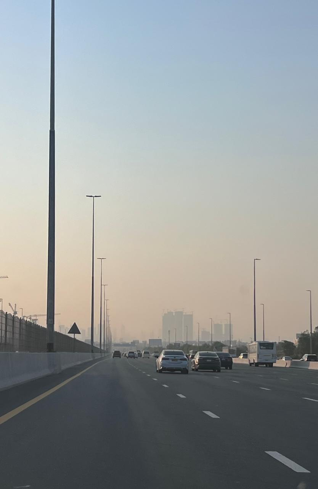
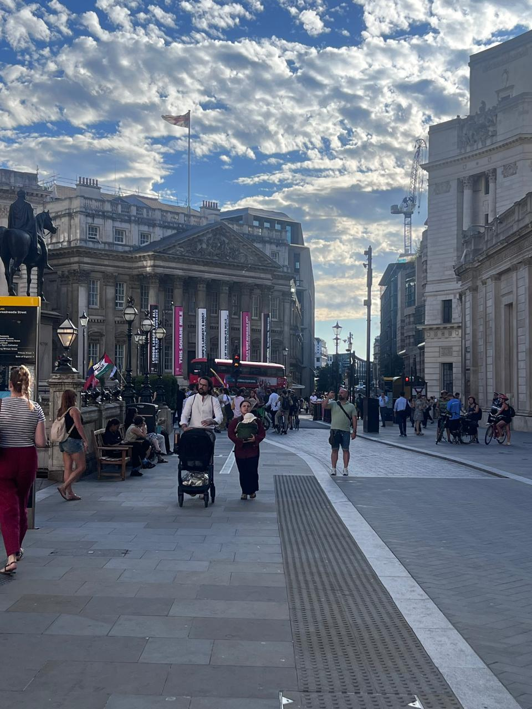

I recently spent time in both Dubai and London, back to back. I have friends in both, enjoyed both. But London felt warmer, not in temperature, in the way strangers interact. A nod on the pavement. A "cheers" to the bus driver. A barista who actually talks to you. Tiny stuff, but it accumulates into a feeling that the city notices you.
My first instinct was culture. But I think it's speed.


Dubai is built around cars moving at 60+ km/h between air-conditioned boxes, car to elevator to office to mall. It's incredibly efficient. London moves at walking pace. People share pavements, wait at crossings, stand on platforms together. And when you're doing five kilometres an hour instead of sixty, you have time to notice the person holding the door, or the guy wrestling a suitcase up the Tube stairs.
We measure cities by travel time, congestion, density, accessibility, all important. But none of those capture the likelihood of a human encounter. A wider pavement isn't just pedestrian capacity. A slower street isn't just road safety. They're invitations to linger and actually see another person.
Maybe warmth isn't only a characteristic of people.
Maybe it's also a characteristic of streets.